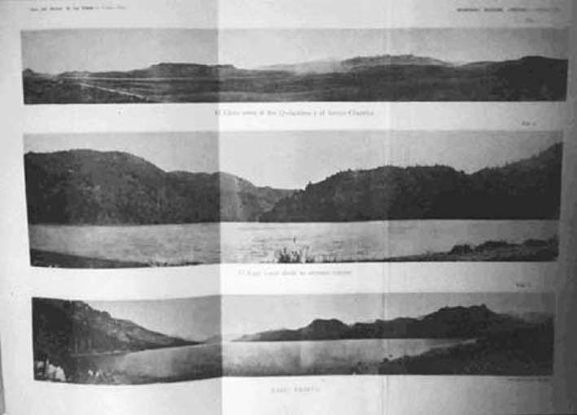

|
|  |
|
Francisco P. Moreno, La región andina
|
If the construction of 'national scientific apparatuses', then, can be analysed as a crucial aspect of the cultural history of de-colonisation, the emulation of European modes of knowledge and technologies of data-gathering and fact-production, on the other hand, must also be read in terms of a process of 'internal colonialism' worked on the national peripheries by the centres (in both the geographical and the socio-political sense). This is perhaps nowhere more evident than in the production, on behalf of naturalists such as Ameghino or Francisco P. Moreno, of Patagonia as a purely 'natural space', virtually untouched since remote jurassic ages, and whose incorporation into the national archive spelled the apogee of (Argentine) civilisation. Indigenous inhabitants and their 'local' knowledge of the region, although in reality indispensable for the construction of maps and the collection of specimens, were edited out of this 'objective', scientific image: today, the effects of this dismissal can be observed in the social and ecological havoc that a centruy of 'civilisation' has wreaked upon the region.
|